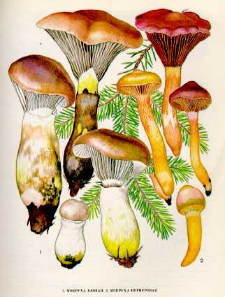

1. МОКРУХА ЕЛОВАЯ
Встречается в ельниках и смешанных лесах, чаще всего под елями, среди вереска и мха, с июля по сентябрь, небольшими группами.
Шляпка до
Мякоть плотная, белая, у старых грибов сероватая, в основании ножки желтоватая.
Пластинки нисходящие, толстые, слизистые,
сначала буроватые, потом серые или пурпурно-коричневые, иногда с черными
пятнами, а у старых гриб Ножка до II см длины, до
Гриб условно съедобен, четвертой категории. Употребляется вареным, соленым, маринованным. Перед приготовлением следует отварить и воду слить.
2. МОКРУХА ПУРПУРОВАЯ.
Предпочитает сосновые леса, особенно молодые посадки.
Встречается в августе — октябре.
Шляпка достигает
Мякоть оранжево-буроватая, суховатая, без особого
вкуса и запаха.
Пластинки слегка нисходящие по ножке, редкие,
толстые, оливково- или пурпурно-бурые. Споровый порошок оливково-черный. Споры веретеновидные.
Ножка до
Съедобный гриб четвертой категории. Употребляется свежим, соленым,
маринованным. При отваривании чернеет, пригоден для сушки.